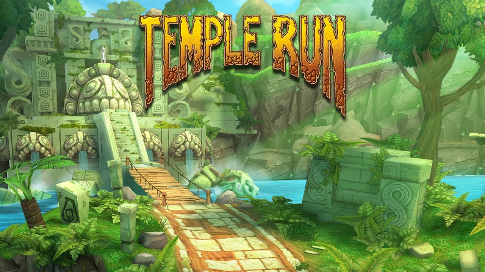

Temple Run

Temple Run is een actie-avonturengame waarin je als avonturier door oude tempels rent. Je moet obstakels en valstrikken ontwijken terwijl je munten verzamelt en demonen ontvlucht. De snelle, verslavende gameplay en levendige graphics maken het een populaire mobiele game.